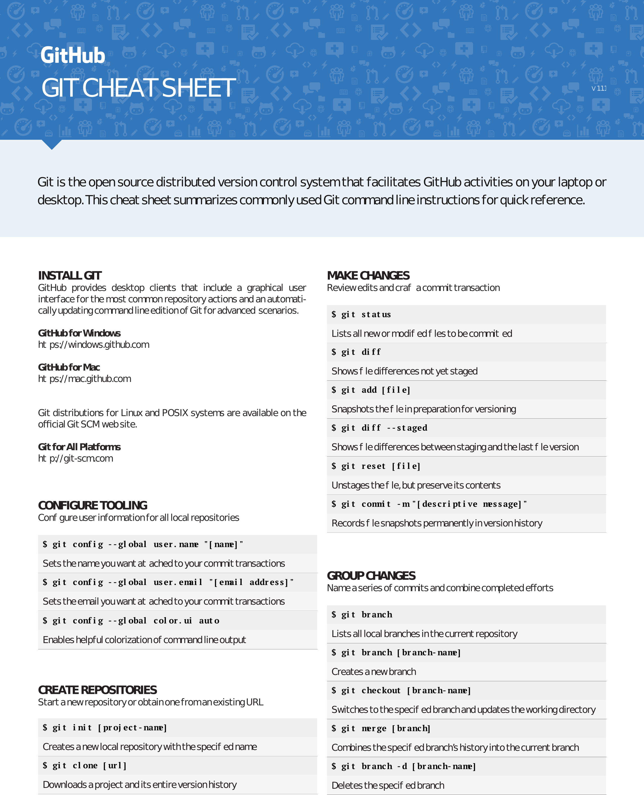
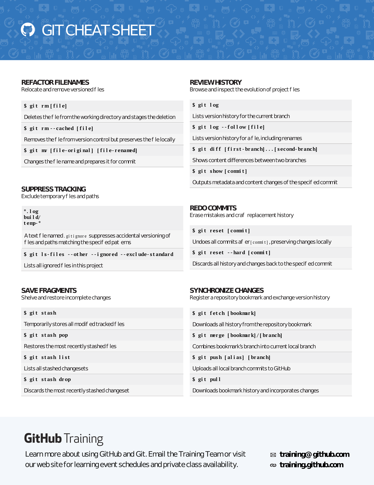
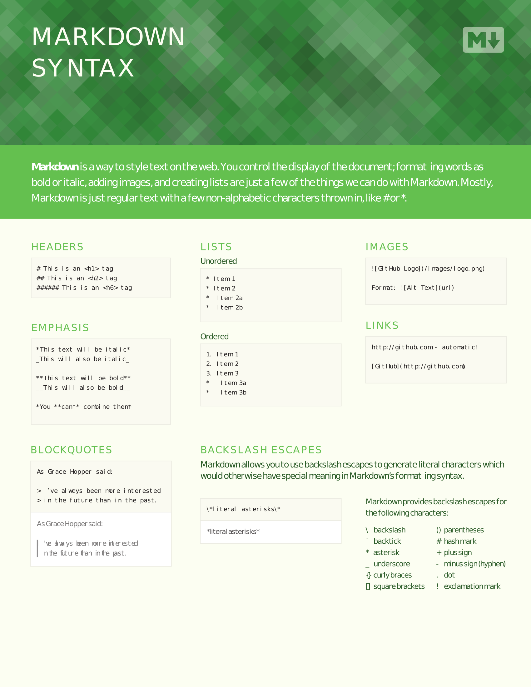
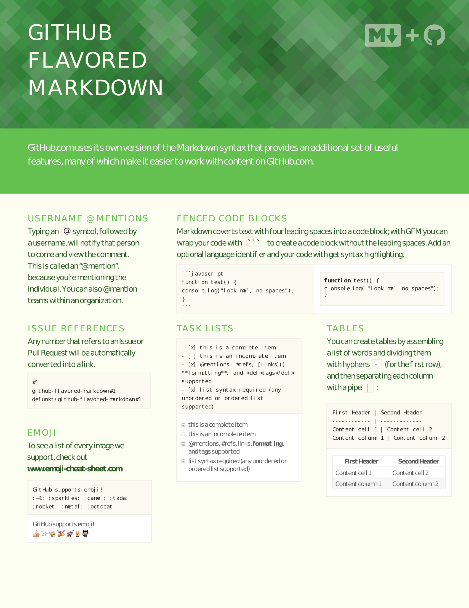

Pense-betes¶
Git¶



Markdown¶


Autres themes Mkdocs¶
Titre¶
Code dans le texte avec a = 1.
a = 1
print(a)
| Entête 1 | Entête 2 | Entête 3 |
|---|---|---|
| Ligne 1, Colonne 1 | Ligne 1, Colonne 2 | Ligne 1, Colonne 3 |
| Ligne 2, Colonne 1 | Ligne 2, Colonne 2 | Ligne 2, Colonne 3 |
| Ligne 3, Colonne 1 | Ligne 3, Colonne 2 | Ligne 3, Colonne 3 |
| vers la gauche | au centre | vers la droite |